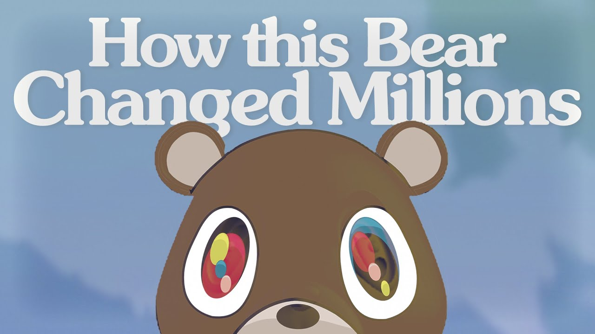
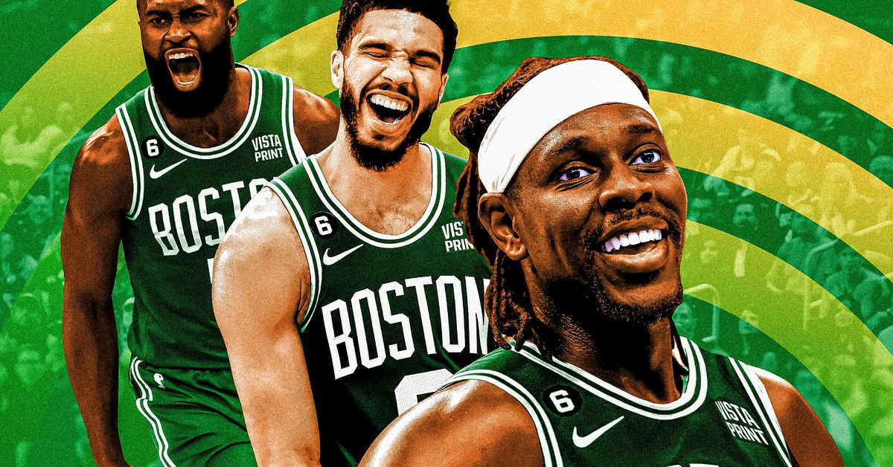

- 
- 
Para mis pasatiempos lo que mas hago es ver series, me gusta jugar basquetbol, a veces me pongo a hacer ejercicio y en ocasiones salgo con amigos, pero siempre me la paso bien.
Con respecto a la musica me gusta mas tener unos gustos musicales como reggaeton, o "R&B", pop se podría decir u otros generos mas destacables o que actualemnte se escuchan mas.
Los videojuegos has sido parte esencial en mi vida ya que desde muy pequeño me han gustado mucho, siempre cuando uba a comprar tortillas me quedaba jugando en la tienda un arcade de los juegos de neo geo.
Para las peliculas son algo que me entretienen, siempre me han gustado las peliculas de acción, comedia, terror o suspenso, me gusta cuando al final de una pelicula no concluye con un buen final si no con uno de incognita.
Con 16 años de edad, soy un chico de 1.70m, me gusta la musica, estudiante de computación, me gusta el cafe, me gusta jugar basquetbol, y una meta que tengo es la de poder terminar mi bachillerato.

Algo que quiero tener bien dominado es el de poder programar bien se que para eso debo de prestar atención en las clases y ponerlo en practica.

Siempre me ha llamado la atención con respecto a cocinar es algo que me gustaría poder haver y tener esa habilidad.

Me gustaría tener la habilidad de poder reparar y arreglar computadoras y seguir aprendiendo dia tras dia el uso de la computadora .